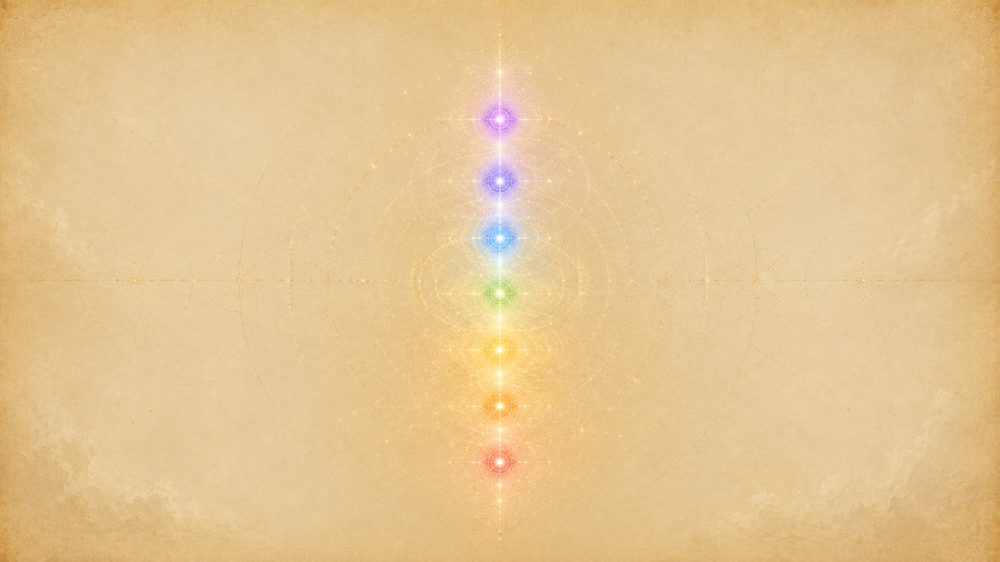

什麼是平衡:讓七個能量中心都明亮暢通
「在一個平衡的個體裡,每一個能量中心都是平衡的,明亮而完整地運作著。」

提問者請 Ra 替「平衡」這個詞下定義,Ra 給的不是道德訓誡,而是一幅能量的圖像。祂要人先想像那「太一無限」——你想不出畫面,於是過程就開始了。接著祂說:愛創造了光,成為「愛/光」,依著一張電磁網的入口點流入行星;而個體跟行星一樣,也是一張帶著入口點的電磁能量場。平衡,講的就是這股流入的能量在你裡面如何運行。
Ra 接著給出這一章的核心定義:「在一個平衡的個體裡,每一個能量中心都是平衡的,明亮而完整地運作著。」反過來,行星本身的阻塞會扭曲智能能量,而「心/身/靈複合體的種種阻塞,則會進一步扭曲、或失衡這股能量」。祂特別強調:這從頭到尾只有「一種能量」,可以理解為愛/光、光/愛,或智能能量。所謂平衡,就是清掉阻塞,讓這唯一的能量在七個中心之間順暢流動、各得其位。
值得注意的是,當提問者用「自我(ego)」這個概念去套——問是不是靠「值得/不值得」的天平去平衡自我——Ra 直接回「這不正確」,並補一句「我們無法使用這個概念,因為它被誤用了,理解無法從中產生」。平衡不是心理學意義上修理「自我」,而是針對那七個能量中心做的功夫。Ra 把「值得/不值得」的議題擺回它真正的位置:那其實是靛藍光中心的某一種扭曲(顯化為「不配得」的感受),只是眾多入口扭曲裡的一個,而不是整套平衡的框架。
最後,Ra 提醒平衡的衡量基準在哪裡。它不在哪個中心特別亮、轉得特別快,而在「紫光」——紫光是「實體振動複合體的總表達」,是整個存有此刻狀態的總讀數。一個各中心都很燦爛、卻在紫光層面相當失衡的人是存在的(因為他沒有照顧到經驗的整體性);可收割與否,看的正是這個總讀數,而非單一中心的亮度。
為什麼要平衡:化解內在評判、讓能量通過
平衡優先於「全開」
Ra 反覆強調一個違反直覺的次序:平衡比「把每個中心都最大程度激活」更重要。祂說,要跨密度畢業,主要能量中心只需運作到「能與智能無限溝通」的最低程度即可;真正被一再強調的,是「個體的和諧與平衡」。完全激活每個中心是極少數人的境界;但一旦必要的中心都達到最低限度的激活,「最重要的觀察,就是這些能量中心之間的和諧與平衡」。
祂甚至給了一個鮮明的對照:「最脆弱的實體,可能比一個能量充沛、極度服務他人的實體更平衡」——只要前者用意志細緻地、專注地把經驗用在認識自己上。換句話說,平衡是用「品質」而非「強度」來定義進展的。
阻塞與內在評判從哪裡來
那麼是什麼造成阻塞?是面對經驗時那些未被消化的反應——尤其是內在的評判與扭曲。Ra 把人面對人生「催化劑」(各種遭遇)的方式講得很清楚:催化劑進來時,如果它沒有被心智與靈性「充分用掉」,剩下的部分就會交給身體,日後甚至顯化為身體的不適或疾病。平衡的工作,就是在這股能量還在心智層面時就把它看清、接納,讓它順利通過,而不是堵在某個中心、扭曲那裡的流動。
南極先反應:為何「生存」這關要先過
Ra 用磁極解釋經驗如何進入:經驗是被「南極」(負極、吸引極)拉進來的,而身體上對應南極的,是最底層的「紅光/根部中心」。所以任何經驗,「根部、或基礎,都會被給予最先運作的機會」。這個最先跳出來的反應是什麼?是「生存」。Ra 說這個本能最強,「一旦它被平衡,許多東西就向尋求者敞開了」——南極不再堵住經驗資料,更高的能量中心才有機會去使用被吸引進來的經驗。這說明了為什麼平衡要「從底層紅光開始,逐級往上」,而不是直接跳到高階。
把分裂的光重新組裝回造物者
提問者問:既然造物者的光被分裂成各種顏色與能量中心來體驗,那要回歸造物者,是不是就得把這些中心「精確地」按原來分裂的樣子組回去?Ra 說這題很難簡單回答,但點出核心:重點不在「最大程度激活每個中心」,而在「規整經驗的種種能量」。走在正向可收割之路上的實體,關心的是把經驗的各股能量理順、調勻——更高的密度會給「最低限度平衡」的個體大量的時空,讓他繼續精煉這些內在的平衡。平衡因此不是這一世非達標不可的考試,而是一條跨越好幾個密度、持續精煉的長路。
每日平衡練習:感受 → 誇張 → 喚起相反極 → 回到中心
「先去體驗種種感受,然後在存有之內有意識地發現它們的對立面。」
這是 Ra 給的具體日常修行,也是整章的操作核心。它不是抽象口號,而是一套可以每天做、針對「這一天」的功課。把 Ra 散在第 42、61、64 場的說法整理起來,步驟如下:
- 回顧這一天,挑出帶電的情緒。Ra 說,在分析「一個白晝週期」的經驗時,留意那些「不恰當」的念頭、行為、感受與情緒。判準很簡單:哪一個感受「在心智上留下了餘味、在記憶裡留下了味道」、帶著一股「電荷或力量」,就挑那一個——大多數感受都是轉瞬即逝、不值得理會的。
- 充分地、甚至誇張地去感受它。不要急著壓下去。Ra 在談攻擊與憤怒時,要人在心智中「有意識地強化這份情緒」,把它放到滿,直到看清楚它的本質。先讓它在記憶裡被重新喚起、重新感受,「細節多到足以淹沒感官」。
- 喚起並接納它的相反極。這是練習真正的轉軸:「先去體驗種種感受,然後在存有之內有意識地發現它們的對立面。」感受過憤怒,就在裡面尋出平靜、接納;感受過某種匱乏或失衡的傾斜(偏愛、或偏智慧),就把「所欠缺的那一端」也召喚進來。Ra 說:平衡所欠缺的那部分,「在感受被如此記起、重現之後,被允許進入存有之中」。
- 回到那「不被擺盪」的中心。練習的目標,Ra 講得很明確:「不是讓正負感受都順暢流過、而人保持不動搖;而是讓人成為不被動搖的(becoming unswayed)。」這是更單純、卻需要大量練習的結果。最終,被情緒指向的那個對象、那個處境,變成一個被理解、被接納、不再帶電荷的存在。
Ra 對這套練習的態度很實際:它「需要大量的練習」,而且「催化劑在你們的層面是強烈的,它的運用必須在持續一致的學習/教導中,經過一段時間才被珍視」。所以祂一再請人「保持耐心」。這不是一次到位的頓悟,而是日復一日的細活。
祂也給了「怎麼挑題目」的具體指引。針對身體的感受,Ra 說平衡需要在冥想狀態下進行,但重點是「分析這個感受,特別留意愛與智慧之間、或正與負之間有沒有失衡的傾斜」;在第 64 場,當被問「身體的感受指的是五感、還是觸碰/愛/性那類自然功能?」Ra 給了一個當下的例子:此刻通靈器皿(卡拉)身體因姿勢蜷曲而不適,這個感受帶著強烈電荷,就值得拿來平衡——而判準同樣是「每一個在心智留下意義餘味的感受,都該被檢視」。
平衡不是壓抑,也不是消滅情緒,而是接納兩端
「壓抑情緒會使實體去極化……這不是冷漠,而是一份精細調校過的慈悲與愛。」
最常見的誤解:把「不動聲色」當成平衡
提問者花了一大段話描述他理解的平衡:平衡的人面對任何情境都「保持不帶情緒」,像看電視電影的旁觀者一樣讓正負能量「順暢流過」卻不沾染。Ra 直接說:「這是對我們所討論的平衡的錯誤應用。」祂釐清:練習的目標不是「讓正負感受都順暢流過、人卻不動搖」,而是「成為不被動搖的」——這兩者差很遠。前者是憋著不反應、硬裝冷靜;後者是經過充分感受與整合之後,那個處境本身對你已不再帶電荷。
壓抑會讓能量中心「變暗」
那壓抑會怎樣?Ra 講得很重:「壓抑情緒會使實體去極化,因為它等於選擇了不去自發地使用當下的催化作用,於是使能量中心黯淡下來。」也就是說,壓抑不只是「沒進步」,而是實實在在地讓你倒退、讓中心失去亮度。(祂補了一個例外:如果壓抑的原因是「為他人著想」,則仍帶有一點正向極化。)
但 Ra 也分得很細——「能感覺到催化劑、卻不覺得有必要表達反應」的人,跟「壓抑」是兩回事。前者不會去極化,因為他的經驗連續體是「透明的」。逐步增進「觀察自己反應、認識自己」的能力,會讓人越來越靠近真正的平衡。Ra 的建議因此非常明確:「我們不建議壓抑或抑制對催化劑的反應」——除非那個反應會成為對他人不符合一法則的絆腳石;否則「讓經驗表達它自己,遠遠更好,這樣實體才能更充分地使用這份催化劑」。
不需要「克服」,不需要的東西會自行脫落
這一點呼應了「接納 vs 控制」的主題。提問者引用神祕傳統「必須抹除自我、忽略物質世界才能開悟」的說法,問正確的態度是什麼。Ra 反對「克服慾望」式的修行,給了關鍵句:「沒有什麼需要被克服。不需要的東西會自行脫落。」實體在這個密度恰當的角色,是「去體驗一切所欲之事,然後分析、理解並接納,從中蒸餾出其中的愛/光」。
祂進一步說明為什麼「克服」是錯的:「克服是一種不平衡的行動,會在時空連續體中製造平衡上的困難。」更糟的是,刻意克服反而「製造出緊抓住那個看似已被克服之物的環境」——你越用力壓,它越黏著你。對於與一的法則不協調的慾望,Ra 的折衷辦法是用「想像」去體驗,既保全自由意志、又維持和諧。平衡因此從頭到尾都是「接納兩端」,而不是挑一端、消滅另一端。
「不動搖」是什麼意思:不是麻木,而是充滿愛
那麼平衡的人面對攻擊、痛苦時是冷冰冰的嗎?Ra 說得很清楚:當被問「一個完美平衡的實體,被攻擊時會有情緒反應嗎?」祂答:「會,那個反應是愛。」即使攻擊帶來身體的痛、甚至失去性命,這個回應仍應維持。祂下結論:「平衡不是冷漠,而是那個觀察者不被任何分離感蒙蔽,反而完全被愛所充滿。」這也是平衡與壓抑最根本的分野——壓抑是把情緒關起來、把人變灰,平衡是把情緒看穿、把人融進愛裡。
用具體例子看:憤怒、攻擊、愛/接納
公牛 vs 人:同樣是攻擊,平衡點不同
提問者用一個比喻問:你誤闖牛欄,公牛攻擊你,你會閃,但不會怪牠,頂多是怕被撞傷的恐懼;可是如果是另一個人在他的地盤上攻擊你,你的反應往往帶著更多情緒、引發身體反應。把這兩者「都看成造物者、都去愛、都理解他的攻擊是他自由意志的行動」,是不是就在這方面平衡好了?Ra 說基本正確,但補了重要的一層:平衡的實體會看見人類攻擊背後的成因——那「在多數情況下比二密度公牛的成因複雜得多」。正因為看得更深,這個平衡的人「反而向更多服務第三密度他人的機會敞開」。平衡不是看淡,而是看得更透、因此更能服務。
面對憤怒:充分感受它、看穿它,再讓它被接納整合
憤怒是 Ra 用來說明平衡的招牌例子。正向的用法,是覺察到憤怒之後不去發洩、也不去壓抑,而是在心智中有意識地強化這份憤怒、把它放到滿,直到看穿這股紅光能量的本質——它不過是隨機的能量;再透過意志與信心,讓它「被理解、被接納、被整合」。走到最後,被憤怒指向的那個對象,「成為一個被接納、被理解、被包容的存在」。這正是每日練習「感受→誇張→喚起相反極→回到中心」在憤怒上的完整示範。
對攻擊的回應是「愛」——但這份愛是被允許表達出來的情緒
Ra 在這裡澄清了一個容易被搞混的點:對攻擊的「平衡回應」並不是「沒有情緒」。被問到平衡的人被攻擊時的情緒反應時,祂明確說「那個反應是愛」——也就是說,愛本身就是那個被允許、被表達出來的情緒回應。平衡不是把情緒清空成中性,而是讓恰當的情緒(在這裡是愛、是看見對方成因的慈悲)自然流出。
愛與智慧失衡時,也用同一套練習
例子不只憤怒。Ra 談身體的自然功能(觸碰、愛、性、渴望有人作伴以對抗孤獨)時說,這些都可以拿來平衡:在日常生活中觀察它們,看看「對自己的愛、對他人的愛」與「運用這些功能的智慧」之間有沒有傾斜。一邊可能是「過量的愛」(還得分清是愛自己、愛他人、還是兩者),另一邊則可能是「過度傾向智慧」。無論哪種傾斜,重要的是「在這個層面理解每一次與他人的互動」,讓無論是愛/智慧或智慧/愛的配置,都把他人看成一個平衡的樣貌,自己也就被釋放、能繼續做功。同一套「找出傾斜、把欠缺那端喚進來」的方法,適用於一切成對的感受。
平衡與七個能量中心,以及療癒者訓練
「心/身/靈複合體不是一台機器,而毋寧是一首調性詩(tone poem)。」
七個中心:從紅光的「接納自己」開始
當提問者問「一個人怎麼開始平衡自己?第一步是什麼?」Ra 說步驟其實只有一個——「理解構成心/身/靈複合體的那些能量中心」。然後祂逐一鋪開:
紅光(地球/Malkuth)是基礎,「對這股能量的理解與接納是根本性的」。橙光是情緒、個人的中心,阻塞時顯化為「個人的怪癖、或關於自我認識/接納的扭曲」。黃光(太陽神經叢)最接近一般說的「自我」,阻塞時顯化為「朝向權力操縱與其他社會行為的扭曲」。Ra 警告:前三個中心若有阻塞,「在進一步尋求一的法則的能力上,會持續遇到困難」——這呼應了前面「南極/紅光要先平衡」的次序。
綠光(心輪)是「第三密度存有得以躍向智能無限的中心」,阻塞顯化為難以表達普世之愛或慈悲。藍光是第一個「既向內接收、也向外發出」的中心,阻塞者難以掌握或表達自己的靈/心、也難以接收他人的溝通。靛藍光(松果體)接收「最少扭曲的愛/光流出」,握有「通往智能無限門戶的鑰匙」;阻塞時可能顯化為「不配得」的感受(也就是前面提到、被誤套到「自我平衡」上的那個議題)。最後的紫光則是整個振動複合體的「總表達」,Ra 說它「無法像其他中心那樣被操縱」,因此在看一個人是否平衡時,它本身沒有特別需要去調整——它是讀數,不是旋鈕。
不是機械對齊,而是「調性詩」
關於「精確對齊」這個詞,Ra 特別防止誤解。提問者把修行理解成「把人格精確調到與原初思想同頻,分成對應七色的七個紀律區」,Ra 說這話雖對,卻很容易被誤讀:精確「不在於把每個能量中心做系統化的定位,而在於這些中心『流動、可塑的平衡式調和』,好讓智能能量能以最小扭曲流經自身」。然後祂下了那句名言:「心/身/靈複合體不是一台機器,而毋寧是一首調性詩。」
祂用樂器再講一遍:七弦琴可以把每根弦都拉到滿、彈出一個音(等於把每個中心都「全開」);也可以「依恰當的量、恰當的次序去撥動每根弦,奏出音樂」。後者才是平衡的境界。Ra 說:「在一個平衡的個體裡,各股能量靜靜等待著造物者的手來撥出和諧。」激活每個中心,不等於有那份「透過紀律與對個人能量的鑑賞」才生得出的美——那份美來自更深的人格、靈魂的身份認同。所以即使各中心都已激活、沒有阻塞,催化劑仍然必要,用來「精煉各股已激活能量之間的平衡,讓整體振動之弦的每一個音,都與其他能量清晰、調準、和諧地共鳴」。
平衡是療癒者的第一步
這也是為什麼平衡會被擺在療癒者訓練的最前面。Ra 在談療癒練習時說,「探索身體內的種種極性,對於療癒的工作是很好的」;而平衡的工作要在「冥想狀態」下進行,核心是分析感受裡愛與智慧、正與負的傾斜,再把欠缺的那端補進來。療癒別人之前,先得把自己這把樂器調準——一個各中心傾斜、紫光失衡的人,無法成為讓造物者之光順暢流經、再流向他人的清澈管道。平衡因此不是療癒的附帶條件,而是它的地基。
耐心/不耐、慈悲/智慧:成對特質的平衡
從「邊緣」議題逐步走向「核心」
平衡的功課有個自然的進程。Ra 在回應一個關於修行次序的提問時描述:平衡工作會「從較邊緣的關切(例如耐心/不耐),轉向學習以無條件之愛敞開自己,再到接納自己為完整而完美的,最後到接納自己即是造物者」。提問者問:既然如此,何不一開始就直接修「接納自己即造物者」,省去在那些次要、第三層結果上繞圈子?
Ra 的回答點破了「效率」的迷思:要在「接納自己」這個核心任務上真正有效率,「首先必須先知道自己正在接納的、是哪些自我的扭曲」。每一個念頭與行動,都得被仔細審視,找出任何反應背後「扭曲的精確基礎」。祂用建築作比:「楣樑必須先就位,結構才能被建起。」耐心/不耐這類成對特質的平衡,正是那道楣樑——不是繞遠路,而是讓你看清自己在哪些地方失衡,核心的接納才有著力點。
慈悲與智慧:Ra 自己花了一整個密度在平衡這一對
最被 Ra 拿來示範的成對特質,是「慈悲/智慧」。祂坦言第四密度「充滿慈悲」,但這份慈悲「在智慧之眼看來會成為愚行」——它是第三密度的救贖,卻在實體的終極平衡裡造成一種錯配。Ra 自己的群體在第四密度時「有朝向慈悲、甚至為援助他人而殉道的傾向」;直到第五密度收割,才看見「這種未經調節的慈悲」在效用上有缺陷,於是「花了大量的時空,去沉思那些能讓愛浸潤智慧的造物者之道」。連 Ra 都需要一整個密度來平衡這一對,可見成對特質的平衡有多核心。
慈悲不必然往智慧走——兩者是同一枚硬幣的兩面
但 Ra 也提醒,平衡成對特質不是死板的公式。當被問「該把發展中的慈悲拿去和智慧平衡,還是讓慈悲盡量發展不去平衡?」Ra 說,要以「最嚴格的誠實」去做:當慈悲被感知到,就分析它——往往要「一次又一次地嘗試進入慈悲」,才會從中產出真正的普世之愛。過程中你會發現,看似全然的愛裡其實摻著許多別的成分,每一個都可以被平衡、被接納為自己的一部分。
祂特別澄清:「當普世之愛被感知為已經達成時,下一個平衡『可能是、也可能不是』智慧。」愛與智慧,就像愛與光一樣,「不是非黑即白,而是同一枚硬幣的兩面」。所以平衡並非每次都是「從慈悲移向智慧」這個固定方向——關鍵是記得自己所在的密度學的是「愛的功課」,別把更高密度的功課硬套進來。成對特質的平衡,是誠實地看清此刻傾向哪一端,再把欠缺的那端溫和地喚進來,而不是機械地往某個方向推。
冥想、沉思在平衡中的角色
平衡的工作需要在冥想狀態下進行
提問者問:既然要平衡身體的種種感受,是不是該用某種「不活動」的方式,例如冥想或沉思?Ra 說這「大致上不正確」——關鍵分辨在這裡:平衡確實需要冥想狀態才能進行工作,但平衡本身不是「放空不動」,而是在那個寧靜狀態裡做一件主動的事:分析感受、特別留意愛與智慧(或正與負)之間的失衡,然後「把所欠缺的那部分,在感受被細節充分地記起、重現到淹沒感官之後,允許它進入存有之中」。冥想是容器,平衡是在容器裡進行的分析與接納。
沉思:把分析過程「反轉」回統一
Ra 也談到沉思(contemplation)的角色。在講「如何尋向自我的核心」時,祂把冥想、沉思、祈禱並列為「以主觀/客觀的方式,運用或結合各種理解、以增強尋求過程」的方法。祂特別指出一個功能:若「沒有這樣一種反轉分析過程的方法」,人就無法把尋求中得到的眾多理解「整合進統一」。平衡練習會把一個情緒拆開來看(分析、找對立面),而沉思/冥想/祈禱正是那道把拆開的東西重新融回「一」的工序——否則只是把自己拆成碎片,卻拼不回去。
專注力是會與信心的根:平衡要靠它撐住
平衡需要長期、持續的練習,而支撐這份持續的,是 Ra 所說「意志與信心」的培養。被問到培養意志與信心的技巧時,Ra 說「只有一種技巧,就是專注力的聚焦」。祂形容多數人「靈性上的專注時長就像孩童一樣短」,所以功課是「願意變得能夠收攏自己的注意力,並把它穩定地維繫在所欲的編程上」;持續這麼做,意志就被強化,而「整個活動只有在『相信這份紀律會有結果』的信心存在時才能發生」。為了鍛鍊這份專注,Ra 建議做視覺化練習——觀想一個對自己有啟發性的形狀與顏色(宗教路徑,如玫瑰、十字、佛陀),或觀想本身無啟發性的單純形色(魔法路徑);玫瑰或圓圈都行,重點是選一條路去鍛鍊這個能力。冥想與專注,因此是讓每日平衡練習能日復一日做下去的底層引擎。